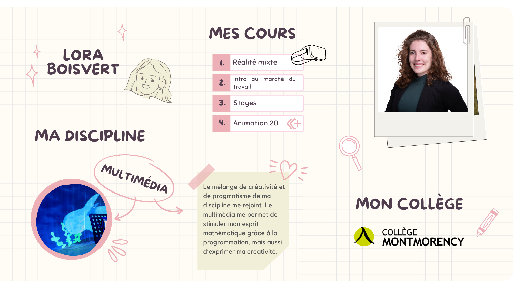

Portrait 1¶
Brève présentation¶

J'ai débuté mon parcours dans le domaine du théâtre. J'ai travaillé comme éclairagiste pendant quelques années. C'est à l'université que j'ai découvert les médias interactifs et que j'ai développé une passion pour le multimédia. En plus de cela, je suis auteure jeunesse depuis une dizaine d'années. Ce faisant, je suis parfois appelée à aller dans les écoles primaires pour présenter mes livres et parler de mon métier. C'est le contact avec les élèves qui m'a donné envie d'enseigner.
Rapport à soi¶
Mes forces¶
Curiosité et intérêt accordé au monde
Je porte attention à tout ce qui m'entoure. J'aime savoir comment les choses fonctionnent et en apprendre sur le plus de sujets possible. J'essaie de stimuler la curiosité de mes élèves.
Amour de l’étude, de l’apprentissage
Pas très étonnant! J'adore apprendre de nouvelles choses. J'enseigne puisque j'aime aussi transmettre ce que j'apprends.
Assiduité, application, et persévérance
Je suis très assidue. J'aime être présente autant pour mes élèves que pour les enseignants que je coordonne.
Honnêteté, intégrité, et sincérité
Cette force se révèle utile lors de la notation des étudiants. Pour moi il est important que chacun soit évalué de façon honnête et juste. Je donne autant de bons commentaires que d'autres à améliorer pour que chacun puisse développer son potentiel.
Gentillesse et générosité
J'aime beaucoup aider les autres. Lorsqu'un étudiant ne comprend pas une notion, je cherche des façons différentes de lui expliquer pour qu'il arrive à mieux cerner le sujet. Voir les autres réussir est aussi satisfaisant pour moi que de réussir par moi-même.
Ma pensée disciplinaire¶
Mes rapports aux savoirs¶
Tableau inspiré de Gagnon, M. (Gagnon, 2015, p.25)4.
Note sur la vidéo
L'exemple ci-haut est appliqué à la réalité virtuelle, mais dans tous les cours que je donne, mes rapports aux savoirs sont similaires.
Par rapport à ce qu'on vient d'apprendre sur mes rapports aux savoirs quelle est ma vision dominante dans ces axes?
Selon le tableau présenté dans le cours2, ma vision dominante du monde ou du moins de mon enseignement est le socioconstructivisme. Pour moi, les savoirs ne sont pas fixes et on peut les développer en expérimentant en groupe. L'approche par projet que je préconise est tirée de cette vision. C'est en discutant et en échangeant des opinions que les élèves créent leurs savoirs. Évidemment, ce n'est pas le seul rapport au savoir qui me rejoint. C'est à travers un mélange que j'enseigne. Au début des sessions, j'ai une approche plus positiviste. Je donne plusieurs éléments théoriques aux élèves pour qu'ils apprennent les logiciels. Je m'assure qu'ils soient bien outillés pour pouvoir ensuite expérimenter. Après cela, je me rapproche de l'induction pour que les élèves tirent leurs propres conclusions par la pratique. C'est vers la fin de la session que les projets nous permettent de réinvestir les apprentissages et de les pousser plus loin grâce à une approche socioconstructiviste. En groupe, on analyse les projets et chacun tire des éléments différents qui le rejoignent ou non à travers la vision artistique et créative de chaque projet. Ce retour en communauté permet de développer l'œil critique de chacun en plus de constater qu'on ne voit pas tous les projets de la même façon.
Rapports aux savoirs de mes élèves¶
Tableau inspiré de Gagnon, M. (Gagnon, 2015, p.25)4.
En général, plus la session avance, plus les élèves se sentent investis face au savoir puisqu'ils doivent les appliquer.
Mes croyances au sujet de l’intelligence¶
Je trouve que la mentalité de croissance est un concept intéressant. Je crois que personne n'a les mêmes talents à la base, mais que tous ont la capacité d'apprendre et de se développer s'ils y mettent les efforts. Pour moi, il est faux de dire que tout le monde doit mettre le même niveau d'efforts pour arriver au même résultat. Cependant, je crois que tous ont une chance d'arriver à un résultat similaire même si le chemin pour s'y rendre est bien différent. D'ailleurs, c'est pourquoi donner un cours à de nombreux étudiants peut parfois être ardu. Pour certains, peu de temps sera nécessaire pour comprendre un concept et l'appliquer alors que d'autres auront besoin de beaucoup de pratique et de répétition pour y arriver.
Rapport à soi et pratiques enseignantes¶
Pas toujours évident d'avoir des pratiques enseignantes en adéquation avec notre rapport à soi! Voici quelques exemples bons et moins bons pour illustrer cela:
Succès des sorties scolaires
Dans mes forces, on a constaté que je suis très curieuse. J'essaie de stimuler la curiosité de mes élèves pour la matière et une méthode qui fonctionne bien pour cela est d'aller en sortie scolaire ou de recevoir un conférencier dans le cadre de mes cours. Visiter le milieu dans lequel ils évolueront après la technique amène souvent des questionnements aux étudiants. Être confronté au milieu permet également aux élèves de sortir du cadre scolaire et de se rappeler que tout ce qu'ils apprennent leur servira dans le futur. Voir comment ce qu'on apprend en classe est utilisé par les entreprises est souvent un grand facteur de motivation pour les élèves. En étant en contact avec les gens de l'extérieur, les élèves et moi-même fortifions notre pensée disciplinaire.
Difficulté d'adéquation entre ma vision de l'intelligence et mon enseignement
L'une des difficultés que je trouve en tant qu'enseignante est d'avoir un grand nombre d'apprenants. Chaque élève a son propre niveau et ses besoins. Je crois en la mentalité de croissance et au fait que chacun peut se développer s'il y met les efforts, mais le fait que chacun n'ait pas les mêmes efforts à faire peut susciter un sentiment d'inégalité entre les élèves. Par exemple, pour un travail technique qui demandait de reproduire une animation que j'avais faite, certains ont eu besoin de deux jours alors que d'autres ont dû travailler deux semaines. Cela a entraîné le mécontentement de certains élèves pour qui tout prend plus de temps. Voyant cela, dans un autre exercice à faire en classe, j'ai essayé d'intégrer des défis supplémentaires pour que ceux qui travaillent plus rapidement aient quelque chose à faire en attendant que les autres finissent. Cela cause alors un débalancement dans les apprentissages que les élèves font. En bref, pour l'instant je n'ai pas de solution parfaite.
Succès de l'approche par projets
Comme mentionné ci-haut, j'utilise beaucoup l'approche par projet dans mes cours. Je permets ainsi à mes élèves de découvrir les logiciels que j'enseigne tout en exprimant leur créativité. Cette approche rejoint beaucoup ma pensée disciplinaire du «apprendre à apprendre». En faisant les projets, les élèves poussent leurs connaissances plus loin que s'ils répètent des exercices que je leur explique comment faire. De plus, comme chacun réalise un projet à son niveau, il est plus facile de respecter la mentalité de croissance en aidant chaque élève à se développer à son rythme. Finalement, en plus de l'approche par projet, j'utilise beaucoup les rétroactions en groupe sur les projets qui permettent un rapport au savoir socioconstructiviste.
Difficulté d'adéquation entre mes rapports aux savoirs et mon enseignement
Tel que mentionné dans la section des rapports aux savoirs, je vois la matière de mon programme comme un grand réseau de plusieurs concepts interreliés. Cependant, je trouve parfois difficile de situer le niveau de mes élèves à travers ce réseau, surtout lorsqu'ils sont en première année. Comme je ne peux pas savoir exactement tout ce qu'ils ont appris dans leurs autres cours, et surtout ce dont ils se souviennent, j'utilise parfois des analogies avec d'autres domaines plutôt que de me baser sur ce qu'ils devraient connaître dans ma discipline. Je devrais mieux me renseigner auprès d'eux sur leurs acquis et connaissances antérieures afin de pouvoir réinvestir les notions qu'ils connaissent déjà et faire des comparaisons avec ce que je veux leur enseigner.
Favoriser les apprentissages de mes étudiants¶
En résumé
Approche par projet: Chaque étudiant doit participer à chaque étape du projet. Les élèves commencent par faire les visuels ensemble, puis ensuite la programmation et ainsi de suite.
Approche par projet modifiée: Chaque étudiant choisit un rôle et se développe dans celui-ci. Un fait la programmation et l'autre les visuels par exemple. La semaine suivante, les étudiants se partagent ce qu'ils ont fait et leur méthode et ils échangent leur rôle. Cela favorise l'entraide entre eux et les élèves fourniront un meilleur engagement puisqu'ils seront les seuls à pouvoir faire avancer une composante particulière de leur projet.
Comment la modification de mon approche par projet est en cohérence avec mon rapport à soi?
- Cette approche modifiée se base sur le socioconstructivisme qui est une théorie qui me rejoint beaucoup. Je crois que les élèves ont beaucoup à apprendre entre eux.
- La mentalité de croissance est encouragée par le fait que chacun ait un rôle distinct. On s'assure ainsi que chaque élève se sente important dans l'équipe et ait envie de travailler pour aider ses coéquipiers.
- On développe notre pensée disciplinaire puisque dans le milieu du travail on est constamment appelés à travailler en équipe avec des gens qui ont des expertises différentes. En abordant le projet comme un tout, on se rapproche du paradigme de l'apprentissage qu'on verra dans le rapport au travail. En effet, tel que mentionné dans le Carrefour de la réussite au collégial: [Il est important] de ne pas aborder les connaissances à acquérir de manière compartimentée et décontextualisée, mais dans leurs interactions et en relation avec des contextes qui donnent un sens à leur utilisation. (Carrefour de la réussite au collégial, 2022, p.155)3 Aborder l'approche par projet avec une méthode qui ressemble au marché du travail me semble une bonne façon de donner un sens à l'apprentissage que font les étudiants.
Rapport au travail¶
Vision de l'enseignement, de l'apprentissage et de l'évaluation¶
Je dirais que je suis à mi-chemin entre les paradigmes de l'enseignement et de l'apprentissage. Je voudrais tendre plus vers l'apprentissage. Au niveau de la notation, je me rapproche du paradigme de l'enseignement puisque j'utilise encore la notation par chiffre. Cela, puisque tel qu'énoncé dans l'article de Hétu: [les professeurs] auront une tendance naturelle à reproduire ce qu’ils ont vécu comme étudiants. (Hétu, 2019, p.5)5 J'essaie peu à peu de me détacher de la notation par chiffre en basant mes évaluations sur des critères basés sur les objectifs d'apprentissage, mais comme le cégep exige encore une note chiffrée, il est difficile de passer à un autre paradigme. Afin d'éviter que mes étudiants se comparent, je ne donne jamais accès à la moyenne à mes étudiants. Au niveau de l'enseignement, comme je passe beaucoup par la pratique et le partage, je me rapproche du paradigme de l'apprentissage. Au niveau de l'apprentissage, j'accorde une grande place à l'erreur dans mes cours. Pour moi, l'erreur est essentielle. J'aime d'ailleurs l'approche par compétences mentionnée par Hétu qui propose de: Se servir de l’erreur comme outil d’apprentissage (Hétu, 2019, p.9)5. Dans le cas de la programmation, nous apprenons souvent par l'erreur. Il est très rare que nos codes fonctionnent du premier coup. Ainsi, on apprend à trouver les erreurs et à les corriger. Au niveau créatif, l'erreur est aussi importante. C'est parfois en utilisant des procédés différents qu'on crée des résultats intéressants. Si jamais ça ne fonctionne pas, on aura appris une façon de ne pas faire les choses. L'important c'est que l'on comprenne pourquoi afin de ne plus le refaire par la suite. Finalement, les connaissances antérieures ont un rôle majeur au sein de mon enseignement. En réalité virtuelle, j'enseigne à des étudiants de troisième année. Ainsi, ils ont un grand bagage commun de connaissances. Je vais puiser dans ces connaissances pour articuler mes cours. Cela me permet d'approfondir beaucoup plus la matière que j'enseigne puisque je n'ai pas à réexpliquer les théories que les étudiants ont appris précédemment. Cela leur confirme également que les différents cours de leur cursus sont interreliés. Cela rejoint mes rapports aux savoirs puisque pour moi les savoirs sont des réseaux de concepts interreliés.
Théories de l'apprentissage qui inspirent mes pratiques¶
Je dirais que mes pratiques enseignantes mélangent plusieurs théories. Même si ce n'est pas la plus amusante, la transmission m'est utile dans certains cours pour présenter des notions de base dans des exposés magistraux. Au niveau plus constructiviste, j'utilise parfois des évaluations formatives qui me permettent de dégager les erreurs des étudiants. Je les amène alors à réfléchir à la façon d'améliorer leur travail pour transformer ces erreurs. Le socioconstructivisme est important pour moi lorsque les élèves effectuent des travaux d'équipe. À travers des projets, les élèves apprennent des choses entre eux. Leurs réflexions et le partage leur permettent de développer de nouvelles connaissances. Le connectivisme est la théorie qui me rejoint le plus parmi celles présentées. Le développement de l'autonomie d'apprentissage est au cœur des cours de multimédia. Comme les informations sont constamment modifiées, il est important que nos élèves sachent consulter les bonnes ressources et trouver de bonnes façons de faire sans avoir accès aux enseignants. On cherche à développer chez les élèves une autonomie, oui, mais aussi des notions de base qu'ils pourront utiliser d'un logiciel à un autre. On leur apprend à faire preuve de discernement face aux différentes informations. À reconnaître lesquelles sont véridiques et lesquelles sont moins pertinentes.
Rapport au travail et pratiques enseignantes¶
Encore une fois, mes pratiques enseignantes et mon rapport au travail sont parfois difficiles à concilier! Voici quelques exemples bons et moins bons pour illustrer cela:
Succès de l'apprentissage par le jeu
Dans mon premier cours de réalité mixte, j'ai créé un tutoriel-jeu qui permet aux étudiants d'apprendre les bases du logiciel que nous verrons pendant la session tout en s'amusant. Cet élément est celui qui a eu le plus de succès auprès des étudiants. Les élèves étaient totalement investis dans la découverte ludique. Cette façon de faire tirée du paradigme de l'apprentissage a beaucoup stimulé les étudiants. J'aimerais utiliser plus d'exercices de ce genre dans mes cours. La seule difficulté réside dans le temps requis pour créer ce genre d'activité!
Difficulté à sortir du mode magistral
Pour transmettre certaines notions, je passe par des cours plus magistraux. Pour ceux-ci, j'ai toujours de la difficulté à trouver de quelle façon rendre le contenu dynamique et attrayant. J'essaie de poser des questions aux élèves et d'avoir des supports visuels attrayants, mais j'aimerais éventuellement sortir du paradigme de l'enseignement et trouver une manière qui tend vers celui de l'apprentissage afin de passer mes contenus. Peut-être en utilisant la classe inversée.
Trouver ma place dans le rôle d'enseignante
Je ne connaissais pas la théorie du connectivisme et en l'apprenant, je me suis sentie très interpellée. Elle valide que je n'ai pas à tout connaître et tout savoir, puisque dans mon domaine l'information change constamment. Je me sens plus à l'aise avec le rôle d'enseignante comme guide vers la connaissance plutôt que de l'enseignante comme moteur de transmission d'une connaissance absolue. À mon arrivée au cégep, ma plus grande crainte était de ne pas tout savoir et que cela déçoive mes élèves. Plus j'enseigne, plus je me rends compte que lorsque je ne sais pas quelque chose, c'est une belle opportunité de montrer à mes élèves comment chercher la bonne réponse. Même quand je sais la réponse, j'utilise maintenant cette stratégie. J'en reviens encore et toujours au développement du «apprendre à apprendre».
Succès des notes de cours interactives
Dans la dernière année, mes collègues et moi avons développé des notes de cours interactives au format web. L'utilisation de nos connaissances dans notre domaine nous a permis de construire une plateforme qui répond à nos besoins et qui est représentative de ce que nous voulons enseigner. On peut y intégrer des vidéos, des notes de cours, des listes à cocher, des exemples de code et même des exercices en ligne. Cette plateforme nous permet de tendre vers le paradigme de l'apprentissage puisqu'elle rend les étudiants plus actifs et autonomes en plus de leur permettre d'apprendre à leur rythme.
Favoriser les apprentissages de mes étudiants¶
Comment cette nouvelle méthode d'évaluation est en cohérence avec mon rapport au travail?
- L'utilisation de l'évaluation formative donne le droit à l'erreur aux étudiants. Cela est important pour moi puisque je veux que les étudiants se permettent de faire des erreurs pour pouvoir apprendre à partir de celles-ci.
- Mon assiduité me permettra d'appliquer cette nouvelle méthode d'évaluation plus facilement. Je suis rigoureuse et j'ai de la facilité à faire des suivis. Ainsi, je crois que les étudiants se sentiront suffisamment encadrés pour tenter cette nouvelle expérience d'évaluation.
- Si je le pouvais, j'aimerais mieux utiliser le système de notation succès/échec pour mes cours. Ce système me semble plus en adéquation avec ma pensée puisqu'il permet de vérifier si on maîtrise suffisamment un sujet pour pouvoir continuer notre cheminement. C'est d'ailleurs ce que Hétu explique dans son article: [la mention succès/échec] pourrait permettre de contourner la tendance des étudiants à ne s’investir que lorsque ça compte et, du coup, de réduire l’anxiété de performance, de les responsabiliser dans leurs apprentissages, de les amener à s’autoévaluer et à s’autoréguler [...] (Hétu, 2019, p.6)5. Comme personne ne progresse au même rythme, ce peut être démoralisant pour certains d'être noté et de ne jamais arriver à leur objectif. Avec une notation succès/échec, je crois qu'on axe davantage sur le processus que sur le résultat final.
Note
La nouvelle méthode d'évaluation que je souhaite tester s'inspire du texte suivant: Aylwin, U. (1995). Apologie de l'évaluation formative. Pédagogie collégiale, 8(3), 24-32. 1. Ce qui m'attire dans cette méthode est que l'élève cesse de se concentrer sur sa note pendant la session et qu'il axe plutôt ses priorités sur son apprentissage.
Bibliographie¶
-
Aylwin, U. (1995). Apologie de l'évaluation formative. Pédagogie collégiale, 8(3), 24-32. ↩
-
Carle. S. (2021). Tableau synthèse des différents rapports aux savoirs. Cours PRF500 et PRF600, Module 1, Université de Sherbrooke, Faculté d’éducation) ↩
-
Carrefour de la réussite au collégial (2002). Du paradigme de l’enseignement… au paradigme de l’apprentissage. Trousse 7 Modèles d’apprentissage (p. 155). ↩
-
Gagnon, M. (2015). Quelle place pour les rapports aux savoirs dans l’enseignement?. Pédagogie collégiale, 29(1), 24-32. ↩↩
-
Hétu, M. (2019). Évaluer pour soutenir l’apprentissage. Constats, orientations, obstacles et pistes de réflexion. Pédagogie collégiale, 32(4), 3-11. ↩↩↩